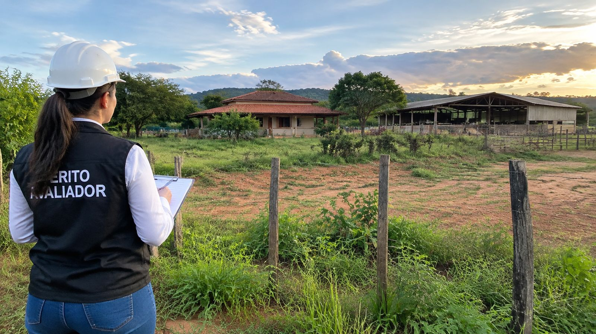
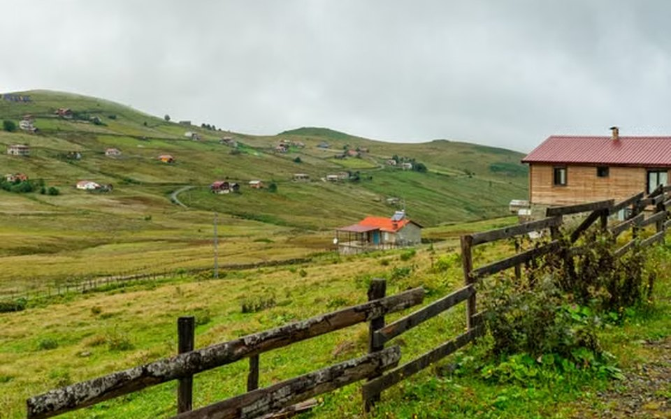
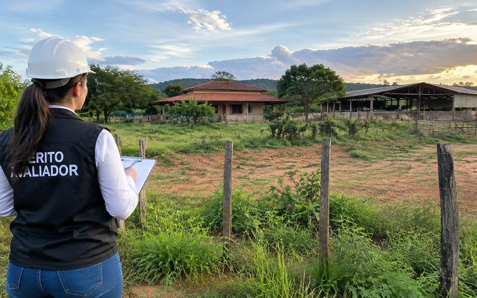

Perícias, assistência técnica e avaliações com rigor de engenharia.
Apresentar meu casoProva técnica para advogados, empresas e proprietários rurais: insalubridade, periculosidade, perícias cíveis e avaliação de imóveis rurais. Presencial na Região Sul e remota em todo o Brasil.
ĒTHICA: engenharia diagnóstica e pericial, com a ética no nome e no método.
A ĒTHICA é uma empresa de engenharia diagnóstica e pericial com sede em Itajaí/SC. Atende presencialmente Santa Catarina, Paraná e Rio Grande do Sul e, de forma remota, todo o Brasil, em processos da Justiça do Trabalho e da Justiça Estadual e em demandas extrajudiciais.
Cada trabalho une vistoria, análise documental e fundamentação nas Normas Regulamentadoras, nas normas técnicas da ABNT e no Código de Processo Civil, para entregar ao advogado, à empresa ou ao proprietário rural uma conclusão técnica clara e defensável.

Eng. Tamires dos Reis Ribeiro
Responsável técnica · ĒTHICAEngenheira Agrícola e de Segurança do Trabalho · Pós-graduada em Engenharia de Segurança do Trabalho com ênfase em Perícia Trabalhista · Especialização em Avaliações e Perícias · MBA em Gestão de Negócios · Perita judicial cadastrada no TJRS, no TJSC, no TJPR e no TRT12
Nomeada pelo Juízo
Experiência em perícias trabalhistas e cíveis que agrega valor na atuação extrajudicial.
Contratada pela parte
Defesa técnica durante todo o processo, do quesito à impugnação do laudo, garantindo a conformidade metodológica e técnica.
Fora do processo
Serviços de Engenharia Agrícola e de Engenharia de Segurança do Trabalho para empresas e particulares.
Cada caso pede uma prova técnica sob medida.
Do processo trabalhista à propriedade rural, a prova técnica que o seu caso exige.
Advogados trabalhistas
Assistência técnica em insalubridade e periculosidade: quesitos, acompanhamento da vistoria, parecer e impugnação do laudo.
Ver solução trabalhistaEmpresas
Defesa técnica em reclamatórias trabalhistas, com revisão de PGR e LTCAT como apoio à defesa no processo.
Ver solução trabalhista
Proprietários rurais
Avaliação do imóvel rural para venda, partilha, financiamento, desapropriação ou servidão, com vistoria e aerolevantamento com drone.
Ver avaliação ruralEscritórios cíveis
Perícia e assistência técnica em avaliação de imóveis rurais, desapropriações, servidões, quantificação de danos e falhas em máquinas e equipamentos.
Ver solução cívelSoluções
Trabalho fundamentado nas Normas Regulamentadoras vigentes, nas normas técnicas da ABNT e no Código de Processo Civil.

Assistência Técnica Trabalhista
Prova técnica para processos trabalhistas: do quesito à impugnação do laudo.
Ver detalhesAssistência Técnica Cível
Perita do Juízo ou assistente técnica das partes em perícias de engenharia.
Ver detalhes
Avaliação de Imóveis Rurais
Laudos de avaliação para diferentes finalidades, conforme a ABNT NBR 14653.
Ver detalhesO que os clientes perguntam antes de contratar.
As respostas essenciais sobre perícia, assistência técnica e avaliação de imóveis rurais com a ĒTHICA.
De que forma o assistente técnico pode me ajudar?
O assistente técnico analisa o processo do ponto de vista técnico e elabora quesitos que conduzem o perito à metodologia correta. Acompanha a perícia e registra em parecer os pontos relevantes da diligência. Se o laudo tiver erro de metodologia, apresenta a impugnação técnica no momento processual adequado.
Qual a diferença entre perito judicial e assistente técnico?
O perito é nomeado pelo juiz e deve ser imparcial. O assistente técnico é indicado e contratado pela parte, é de confiança dela e não se sujeita a impedimento ou suspeição (CPC, art. 466, § 1º).
Quando contratar o assistente técnico?
O ideal é contratar logo que a perícia for determinada. No processo civil, as partes têm 15 dias, contados da intimação da nomeação do perito, para indicar assistente técnico e apresentar quesitos (CPC, art. 465, § 1º). Na Justiça do Trabalho, cada parte também pode indicar um assistente (Lei nº 5.584/1970, art. 3º, parágrafo único).
A ĒTHICA atende fora de Itajaí?
Sim. Atendemos presencialmente toda a região Sul e, de forma remota, todo o Brasil.
Vocês fazem avaliação de imóveis urbanos?
Não. A ĒTHICA faz apenas avaliação de imóveis rurais, mas temos ótimos parceiros para indicar.
Qual norma o laudo de avaliação segue?
A ABNT NBR 14653, com pesquisa de mercado, tratamento dos dados e indicação dos graus de fundamentação e precisão.
Os trabalhos têm ART?
Sim. Os serviços de engenharia são registrados com Anotação de Responsabilidade Técnica (ART) no CREA, conforme a Lei nº 6.496/1977.
Como recebo um orçamento?
Entre em contato e descreva a demanda. Solicitamos os documentos necessários para a análise e enviamos a proposta de honorários o mais rápido possível.
Para quais finalidades vocês avaliam imóveis rurais?
Venda, partilha, financiamento, desapropriação e servidão, entre outras. O laudo segue a ABNT NBR 14653.
Vocês usam drone nas avaliações?
Sim. A vistoria do imóvel rural pode incluir aerolevantamento com drone, que registra a área, as benfeitorias e o uso do solo.
Ainda tem dúvidas?
Conte o seu caso. A análise inicial é gratuita e feita por profissional habilitado.
Vamos conversar
Tem um processo ou um imóvel para avaliar? Conte o seu caso. A análise inicial é gratuita.
- contato.ethicaeng@gmail.com
- (47) 99255-9213
- @ethica.eng
- Sede em Itajaí/SC. Atendemos toda a região Sul presencialmente e todo o Brasil de forma remota.